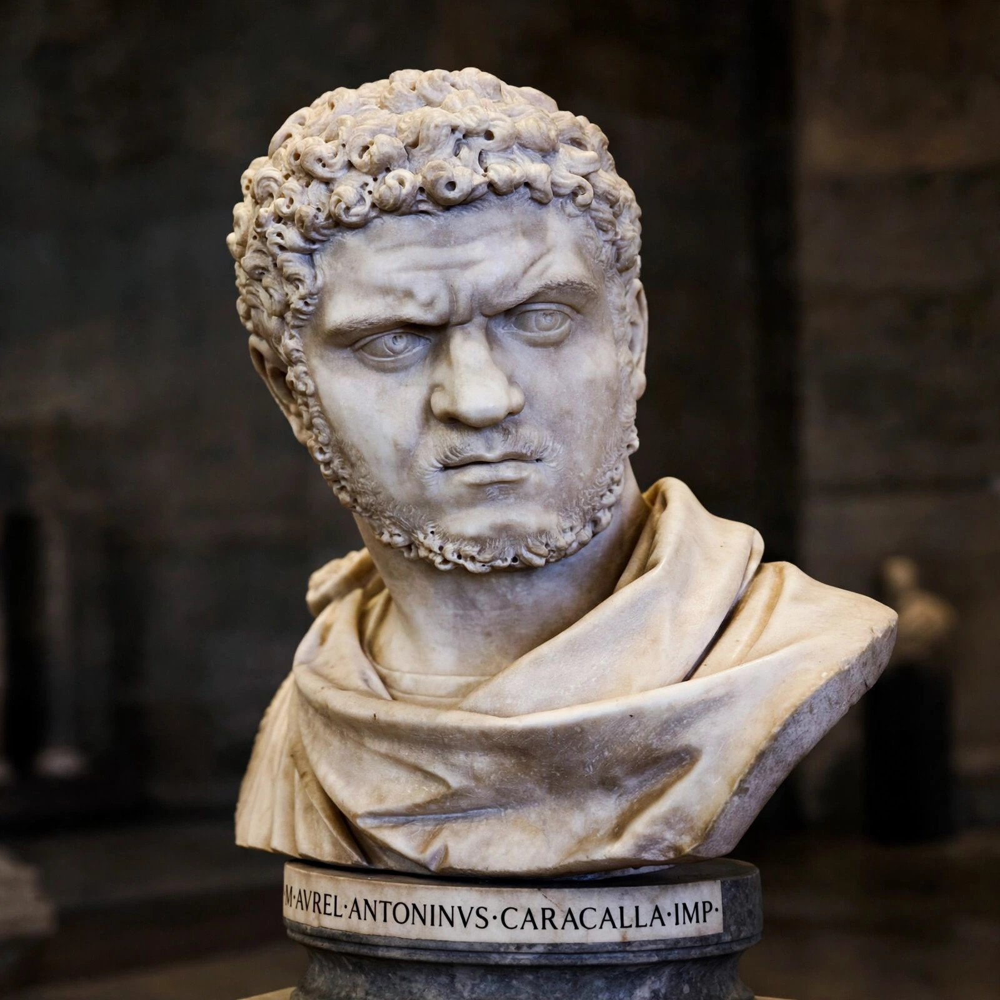

| Caracalla | |
|---|---|
| Reign | 198–217 (sole emperor from 211) |
| Born | 4 April 188, Lugdunum |
| Died | 8 April 217, near Harran (assassinated) |
| Father | Septimius Severus |
| Mother | Julia Domna |

Marcus Aurelius Antoninus (188–217), nicknamed Caracalla after a Gallic hooded cloak, was Roman emperor from 198 to 217, co-emperor with his father Septimius Severus and briefly with his brother Geta, whom he murdered in 211 in their mother's presence, followed by a purge of Geta's supporters.
Caracalla is best known for the Constitutio Antoniniana (Edict of Caracalla, 212), which granted Roman citizenship to nearly all free inhabitants of the empire. He built the immense Baths of Caracalla in Rome, raised soldiers' pay, debased the coinage (introducing the antoninianus), and campaigned in Germany and against Parthia.
While preparing a Parthian war, Caracalla was assassinated in April 217 near Harran by a soldier, Justin Martialis, in a plot associated with the praetorian prefect Macrinus, who succeeded him. Ancient sources portray him as a tyrant, though modern historians note his administrative significance.